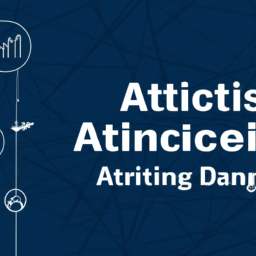

Harnessing AI and Data Analytics in Modern Business
In the rapidly evolving landscape of data analytics, significant innovations are reshaping the way organizations leverage artificial intelligence (AI) and machine learning (ML). Notably, the recent release from a major analytics vendor introduces native integrations with development platforms and automates serverless compute provisioning, streamlining the application development and deployment process.
As analytics pivots towards generative AI (GenAI), the organization has appointed Ketan Karkhanis, previously of Salesforce, as its new CEO to spearhead this transformation. The latest tools focus on improving AI output accuracy and enhancing user experience through integrations, such as querying bots within Microsoft Teams.
Adopting AI and ML within data warehouses establishes a single source of truth, fostering informed decision-making and deeper insights across teams. However, the journey includes key considerations like data governance and ensuring ethical AI use. The importance of great data visualizations cannot be understated, as they bridge the gap between raw data and actionable insights.
Moreover, organizations are encouraged to invest in data literacy training, empowering non-technical users with self-service business intelligence (BI) to explore data. As firms implement these advanced technologies, understanding how to responsibly incorporate private AI and generative features will be crucial for maximizing efficiency and innovation while maintaining data control. With these advancements, organizations are positioned to enhance collaboration, engagement, and overall performance.
